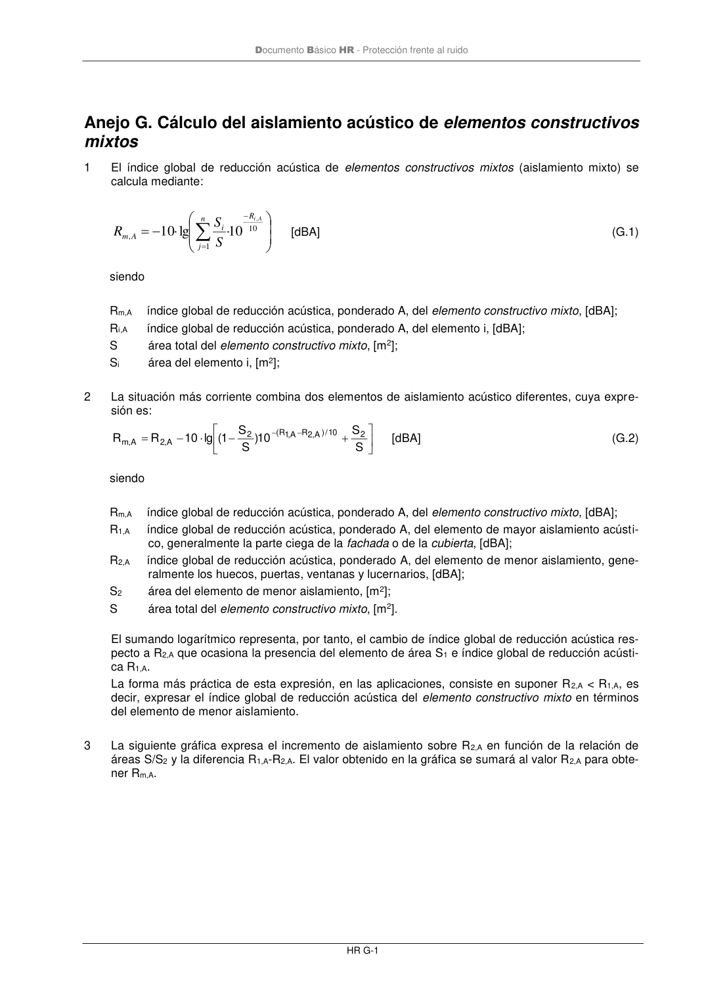
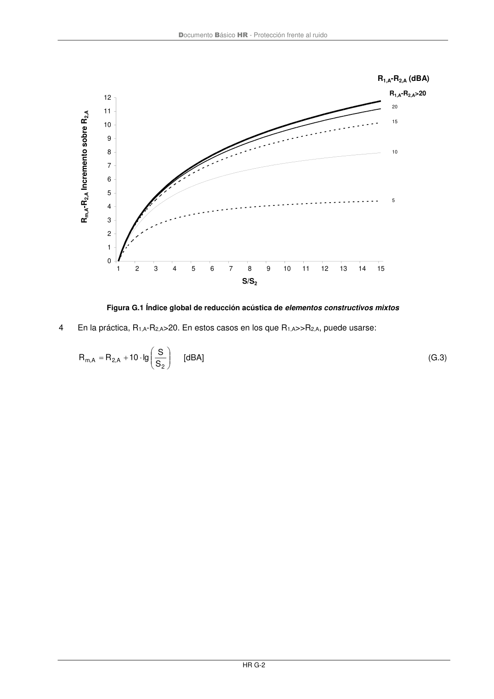
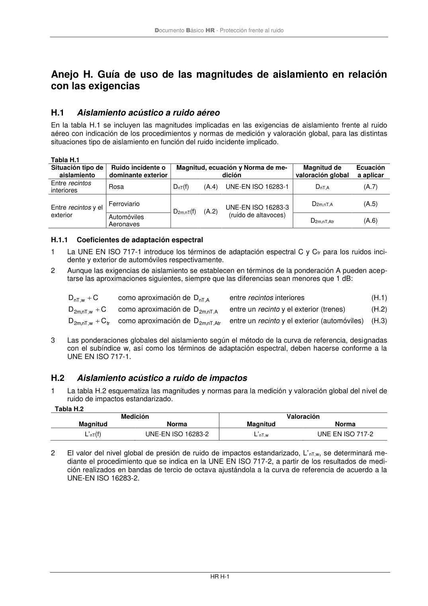

DB-HR Protección frente al ruido · edición 2019-12-20 · capa oficial
Documento DB-HR-oficial · SHA-256 del PDF a67baeca5138bb1f121f797d23a79a4557bd9ac4abacd954024893e05411eeab
Copia fiel del PDF fuente · Fuente oficial
Ficha de la disposición en la fuente oficial
Formatos: JSON del segmento · Markdown
= − n j R i A m A i S S R 1 10 , , 10 · ·lg 10 [dBA] (G.1) siendo Rm,A índice global de reducción acústica, ponderado A, del elemento constructivo mixto, [dBA]; Ri,A índice global de reducción acústica, ponderado A, del elemento i, [dBA]; S área total del elemento constructivo mixto, [m2]; Si área del elemento i, [m2]; 2 La situación más corriente combina dos elementos de aislamiento acústico diferentes, cuya expre- sión es: + − − = − − S S 10 ) S S 1 ( lg 10 R R 2 10 /) A ,2 R A ,1 R ( 2 A ,2 A , m [dBA] (G.2) siendo Rm,A índice global de reducción acústica, ponderado A, del elemento constructivo mixto, [dBA]; R1,A índice global de reducción acústica, ponderado A, del elemento de mayor aislamiento acústi- co, generalmente la parte ciega de la fachada o de la cubierta, [dBA]; R2,A índice global de reducción acústica, ponderado A, del elemento de menor aislamiento, gene- ralmente los huecos, puertas, ventanas y lucernarios, [dBA]; S2 área del elemento de menor aislamiento, [m2]; S área total del elemento constructivo mixto, [m2]. El sumando logarítmico representa, por tanto, el cambio de índice global de reducción acústica res- pecto a R2,A que ocasiona la presencia del elemento de área S1 e índice global de reducción acústi- ca R1,A. La forma más práctica de esta expresión, en las aplicaciones, consiste en suponer R2,A < R1,A, es decir, expresar el índice global de reducción acústica del elemento constructivo mixto en términos del elemento de menor aislamiento. 3 La siguiente gráfica expresa el incremento de aislamiento sobre R2,A en función de la relación de áreas S/S2 y la diferencia R1,A-R2,A. El valor obtenido en la gráfica se sumará al valor R2,A para obte- ner Rm,A. Documento Básico HR - Protección frente al ruido HR G-2 0 1 2 3 4 5 6 7 8 9 10 11 12 1 2 3 4 5 6 7 8 9 10 11 12 13 14 15 S/S2 Rm,A-R2,A Incremento sobre R2,A 20 R1,A-R2,A (dBA) 15 10 5 R1,A-R2,A>20 Figura G.1 Índice global de reducción acústica de elementos constructivos mixtos 4 En la práctica, R1,A-R2,A>20. En estos casos en los que R1,A>>R2,A, puede usarse: + = 2 A , 2 A , m S S lg 10 R R [dBA] (G.3) Documento Básico HR - Protección frente al ruido HR H-1


